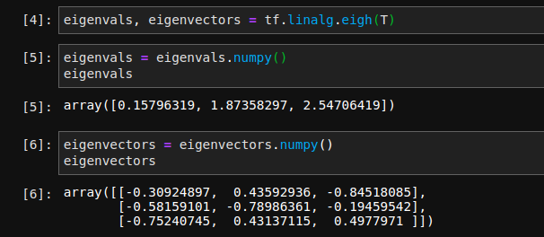
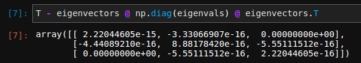

7. Manifold Learning - Multidimensional Scaling¶
Seguindo com o assunto de Manifold Learning vamos ver como funciona a técnica chamada Isometric map, mas um dos passos dela é uma técnica chamada Multidimensional Scaling (MDS), por isso primeiro vamos ver como MDS funciona.
7.1. Matriz de distância¶
Dado um dataset \(X\) com \(n\) observações e \(D\) dimensões, precisamos de uma matriz de distância \(\mathcal{d} \in \mathbb{R}^{n \times n}\), ou seja, uma matriz em que cada elemento \(d_{ij}\) representa um tipo de distância da observação \(x_{i}\) até a observação \(x_{j}\), desse modo, \(d_{ii}\) (os elementos da diagonal principal) são sempre iguais a zero. A distância escolhida em princípio pode ser qualquer uma, mas é usual utilizar a distância euclidiana:
Assim, devemos encontrar uma representação \(\hat{X}\) de dimensão \(d\) dos dados tal que a matriz de distância \(\hat{\mathcal{D}}\) seja solução de
Novamente: nosso objetivo é encontrar uma representação dos dados de dimensão diferente de \(D\), geralmente menor, e que mantenha as distâncias relativas entre os pares de pontos o mais próximas possíveis das originais.
Se a distância for euclidiana podemos usar o produto interno de \(X\) com sua transposta, \(X^{T}\) para produzir:
onde \(J_{n} = \mathbb{I}_{n}- \frac{1}{n}\mathbb{O}_{n}\) é a matriz centralizadora e \(\mathbb{O}_{n}\) é a matriz \(n \times n\) com todos os elementos 1. Essa transformação de \(\mathcal{D}\) no produto interno de uma matriz com sua transposta é as vezes chamada de Gram matrix e é válida para qualquer matriz simétrica não negativa com zeros na diagonal.
Isso serve apenas para dizer que podemos fazer uma decomposição de \(X^{T}X\) em autovetores e usá-los em uma nova representação. No caso de redução de dimensionalidade, como em outras técnicas, escolhemos os \(k\) autovetores com maior módulo.
7.2. Decomposição espectral¶
Fazemos agora um procedimento típico, encontrar:
em que \(\Lambda\) é a matriz diagonal de autovalores e \(U\) é a matriz \(n \times n\) cuja \(i\)-ésima coluna é o \(u_{i}\) autovetor de \(X^{T}X\). O objetivo se torna minimizar
que é resolvida por \(\hat{X} = U \Lambda^{1/2}\). Se quisermos uma representação \(k\)-dimensional escolhemos os \(k\) maiores valores de \(\Lambda\), os autovalores, e construímos a nova representação (o embedding) calculando os autovetores correspondentes. Os vetores de \(\hat{X}\) podem ser usados para projetar os vetores originais do dataset na nova representação.
7.2.1. Exemplo¶
Vejamos um exemplo simples, vamos gerar um dataset com valores quaisquer com \(3\) dimensões e vamos usar os princípios vistos acima para reduzir para \(k=2\) dimensões. Para facilitar o cálculo dos autovalores e autovetores faremos com o Tensorflow:

Chamamos o método linalg.eigh que recebe a matriz \(T\) e retorna um array com os autovalores em ordem crescente e a matriz de autovetores, \(U\).
{kind=link}
Note que para \(k=2\) vamos usar apenas os \(2\) maiores valores de eigenvals. Podemos calcular a matriz erro \(T - U \Lambda U^{T}\), cujos valores devem ser próximos de zero.
{kind=link}
Agora calculamos os autovetores de \(k=2\) e projetamos \(X\) nessas direções:

Feito isso estamos prontos para compreender a técnica chamada Isometric map. Se você conhece a técnica Principal Component Analysis (PCA) deve ter percebido alguma similaridades. Há várias técnicas que utulizam essas matrizes de distâncias ou algum outro tipo de métrica, como a covariância. O ponto importante é que PCA é uma técnica linear e portanto está limitada aos casos em que as observações pertencem a uma variedade sem curvatura, já as técnicas de Manifold Learning podem ser vistas como uma generalização não-linear de PCA.